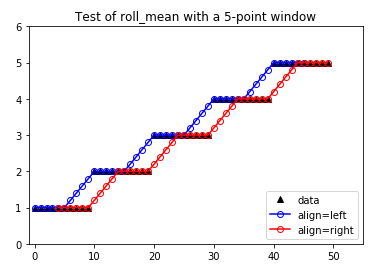

pycheron.rollseis.roll_mean¶
-
roll_mean(x, nwin=7, increment=1, align='center')[source]¶ Fast rolling means with alignment.
Parameters: - x (numpy.array) – Input data
- nwin (int) – n Integer window size. The window size nwin is interpreted as the full window length.
- increment (int) – Integer shift to use when sliding the window to the next location. Setting increment to a value greater than one will result in NaNs for all skipped over indices.
- align (str) –
Window alignment,
"left","center"(default), or"right". Note: foralign = "center"the window size is increased by one if necessary to guarantee an odd window size. The align parameter determines the alignment of the current index within the window. Thus:align = "left"[*——] will cause the returned vector to have n-1 NaN values at the right endalign = "center"[—*—] will cause the returned vector to have(n-1)/2NaN values at either endalign = "right"[——*] will cause the returned vector to have n-1 NaN values at the left end
Returns: returns vector of rolling mean values of the same length as x
Return type: numpy.array
Note
Additional performance gains can be achieved by skipping increment values between calculations
Example
import numpy as np from pycheron.rollseis.roll_mean import roll_mean #Create contrived example to show left, right, and center alignment x = [1,2,3,4,5] x = np.repeat(x,10) left = roll_mean(x,5,1,'left') right = roll_mean(x,5,1,'right')
Plotting
import matplotlib.pyplot as plt plt.plot(x, marker = '^', color = 'black', linestyle ='None',label = 'data') # Plot left alignment with blue circles using 5 point window plt.plot(left, marker = 'o', color = 'blue', markerfacecolor = 'None', label='align=left') # Plot right alignment with red circles using 5 point window plt.plot(right, marker = 'o', color = 'red', markerfacecolor = 'None', label='align=right') # Adjust plot limits to show upper/lower data points more clearly plt.xlim([-1,55]) plt.ylim([0,6]) #Add legend and title plt.legend(loc = 'lower right') plt.title('Test of roll_mean with a 5-point window')